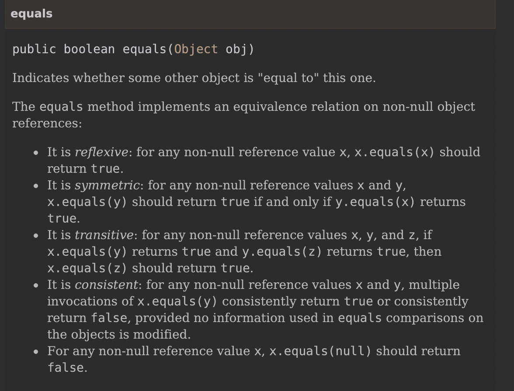

Stackoverflow 中有其他人提的写法，我感觉公司项目中的写法不错记录下
public boolean equals(Object o) {
if (this == o) return true;
if (!(o instanceof CreateOrderDTO)) return false;
CreateOrderDTO that = (CreateOrderDTO) o;
return Objects.equal(getBusiId(), that.getBusiId()) &&
Objects.equal(getBusiType(), that.getBusiType()) &&
Objects.equal(getOrderAmount(), that.getOrderAmount());
}
重写equals需要满足 自反性，对称性，传递性，一致性，非空

== 与 equals
== : 它的作用是判断两个对象的地址是不是相等。即，判断两个对象是不是同一个对象。(基本数据类型 == 比较的是值，引用数据类型 == 比较的是内存地址)
equals() : 它的作用也是判断两个对象是否相等。但它一般有两种使用情况：
情况1：类没有覆盖 equals() 方法。则通过 equals() 比较该类的两个对象时，等价于通过“==”比较这两个对象。
情况2：类覆盖了 equals() 方法。一般，我们都覆盖 equals() 方法来两个对象的内容相等；若它们的内容相等，则返回 true (即，认为这两个对象相等)。